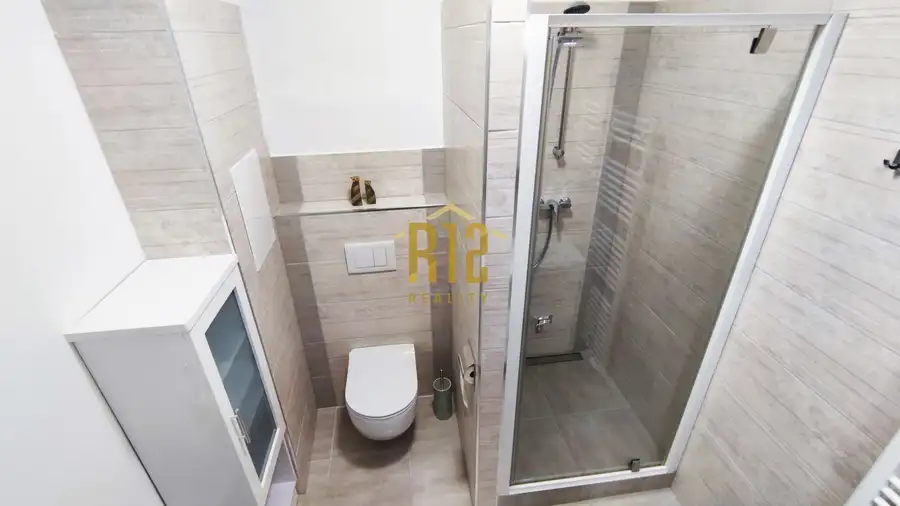
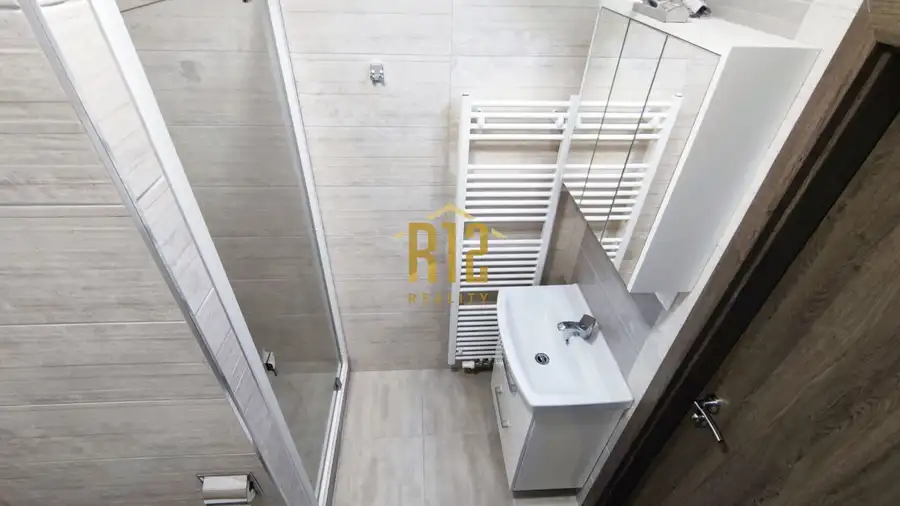
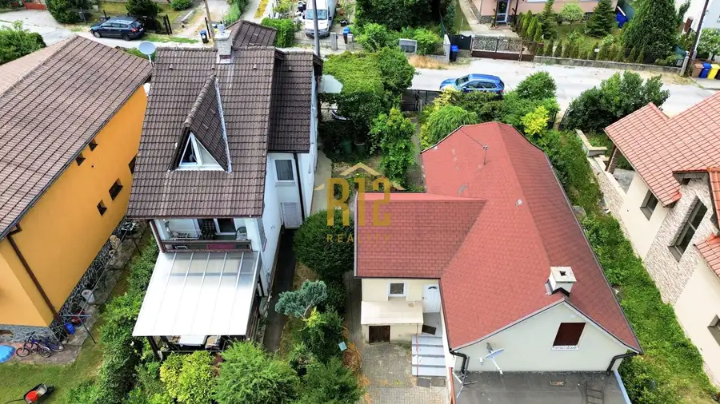
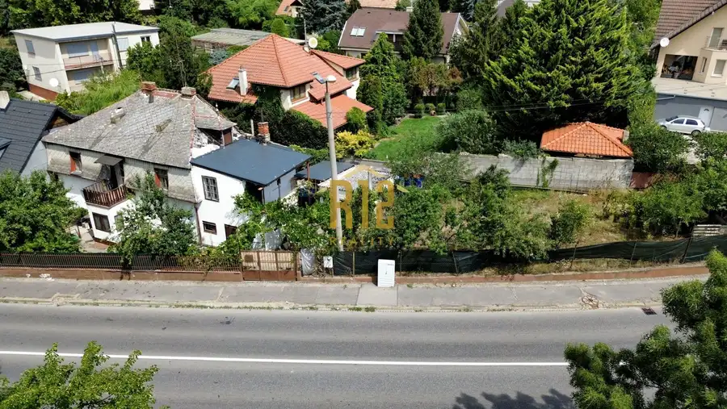
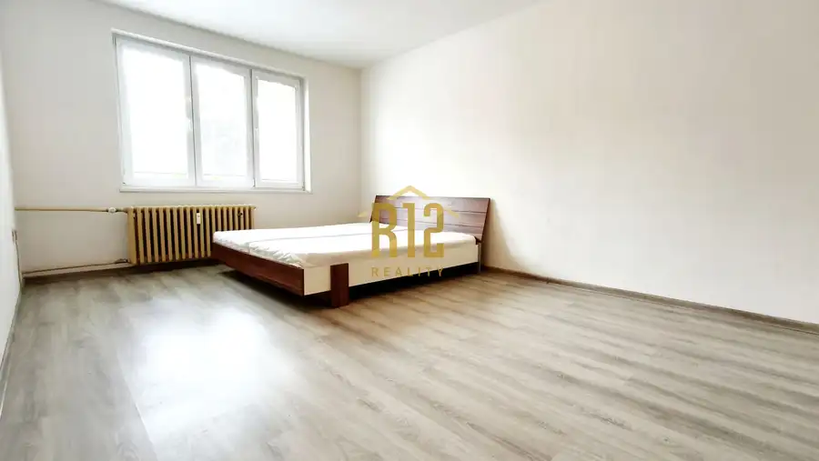

Prenájom · Byt
Prenájom veľkometrážna garsónka s balkónom a parkovacím miestom, Nitra - centrum
Nitra
Cena na vyžádání


- Plocha27.5 m²
- StavNovostavba
- VlastníctvoOsobné
O nehnuteľnosti
R12 reality ponúka na prenájom:zariadená garsónka s balkónom v centre mesta Nitralokalita - Nitraulica - Coborihovýmera bytu- 27,5 m2balkón – ánokompletne zariadená garsónka v centre mestaaj s parkovacím miestomv cene energie, internet a TVsupermarket, MHD do 100m, OC Mlyny 500mvoľná ihneďviac informácii neváhajte kontaktovať:Juraj Horník0902 111 939hornik@r12.sk
Parametre
- Cena vrátane energií
- Áno
- Druh
- Garsónka
- Dátum zverejnenia
- 27. 10. 2025
- Počet nadzemných podlaží
- 4
- Stav nehnuteľnosti
- Novostavba
- Typ
- Prenájom
- Vlastníctvo
- Osobné
- Vybavenie
- Balkón
- Úžitková plocha
- 27.5 m²
Kde to je


Ďalšie ponuky
Celá ponukaMohlo by Vás zaujímať

DomNové 463 500 €EXKLUZÍVNY Predaj rodinný dom + hosťovský dom, Nitra - Čermáň, tichá lokalita Nitra 176 m²
DomNové 119 000 €EXKLUZÍVNY Predaj rodinný dom Nitra - Zobor, pozemok 470 m2 Nitra 102 m²
BytNové Cena na vyžádáníPrenájom 1 izbový byt, Nitra - Vikárska ul. Nitra 1-izbový41 m²1. podlažie